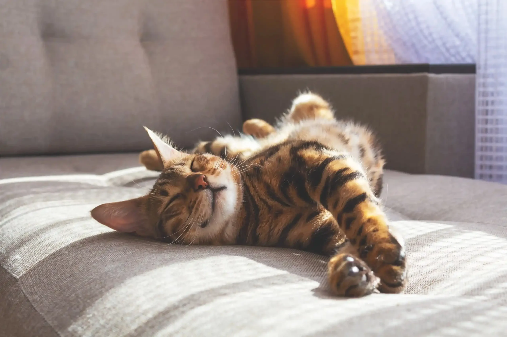
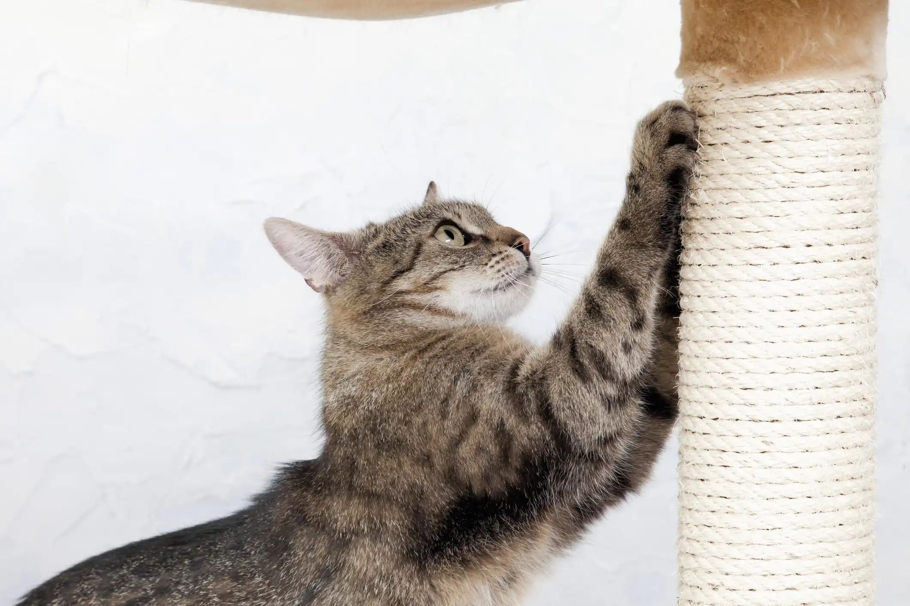
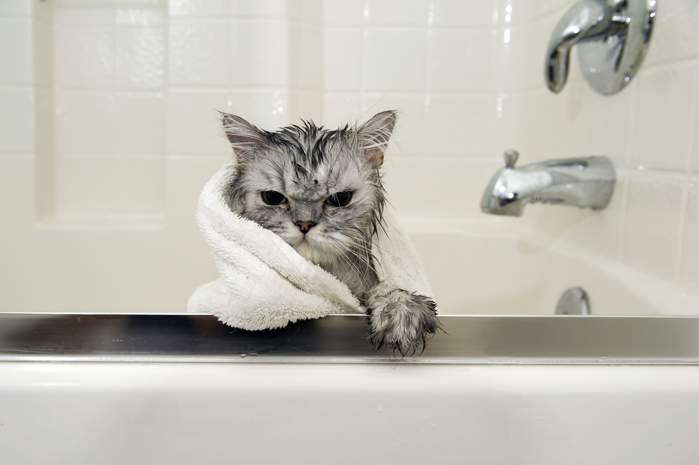
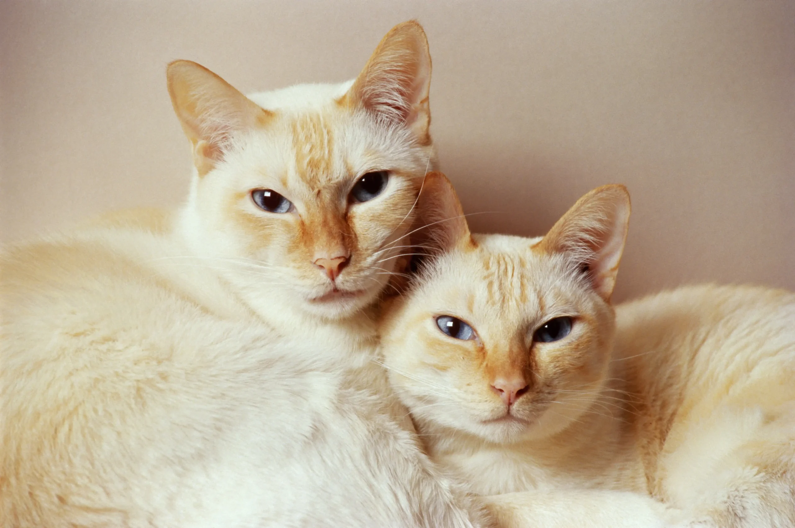
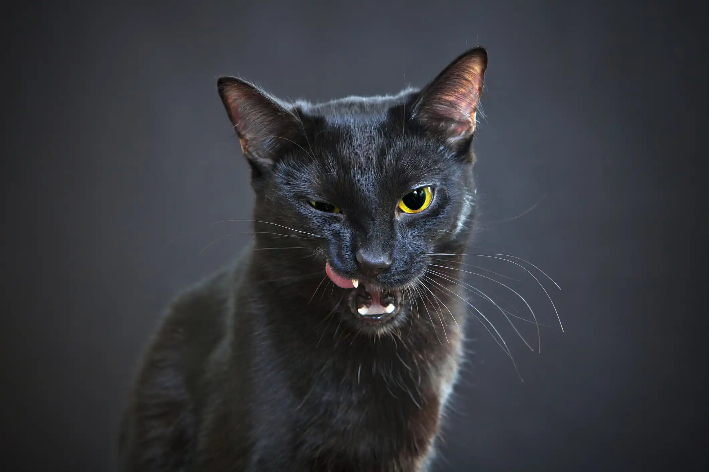

Como saber se o gato é macho ou fêmea?

Por quantos anos vive um gato?

Por que os gatos arranham?

Banho e tosa: principais dúvidas sobre a higiene dos gatos

Conheça as raças de gatos mais populares no Brasil
